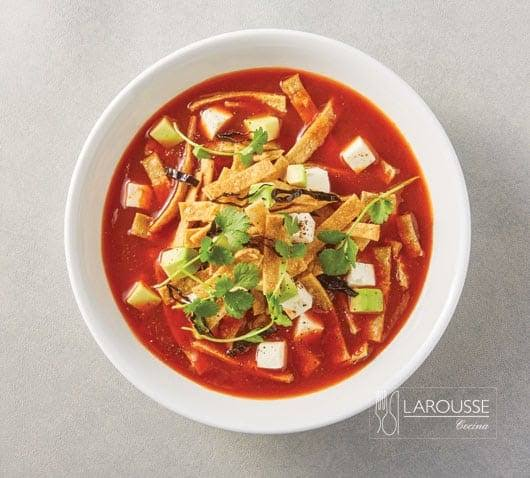

This dish appears to be Sopa Azteca (Tortilla Soup), a traditional Mexican soup made with a rich, flavorful tomato and chile-based broth. It is typically garnished with crispy tortilla strips, creamy avocado, fresh cheese, and cilantro, creating a delicious balance of smoky, savory, crunchy, and fresh flavors. Some versions also include roasted chiles, shredded chicken, or a squeeze of lime for added depth and brightness.
Sopa Azteca is a comforting and satisfying meal that is both hearty and easy to prepare. The crispy tortilla strips soften slightly in the hot broth while still providing texture, and the fresh toppings add creaminess and vibrant flavor. This classic Mexican recipe is perfect as a light lunch, a starter for a larger meal, or a cozy dinner served with warm tortillas or crusty bread.
If using dried pasilla or ancho chiles, remove the stems and seeds, then soak them in hot water for 10–15 minutes until softened.
Heat the vegetable oil in a large pot over medium heat. Sauté the diced onion for 4–5 minutes until softened, then add the minced garlic and cook for 1 minute.
Blend the tomatoes and softened chiles until smooth. Pour the mixture into the pot and cook for 5–7 minutes, stirring occasionally. Add the chicken or vegetable broth, cumin, oregano, salt, and black pepper. Bring to a boil, then reduce the heat and simmer for 20 minutes.
While the soup simmers, fry or bake the tortilla strips until golden and crispy. Drain on paper towels if fried.
Ladle the hot soup into serving bowls. Top each bowl with crispy tortilla strips, diced avocado, queso fresco or panela cheese, roasted chile slices (if using), and fresh cilantro.
Garnish with a squeeze of fresh lime juice and, if desired, a drizzle of sour cream or Mexican crema. Serve immediately while the tortilla strips are still crisp.